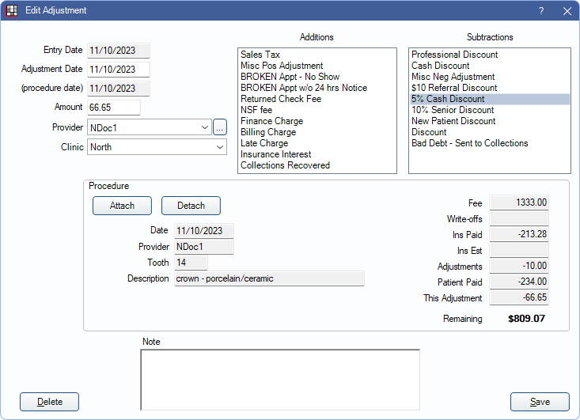
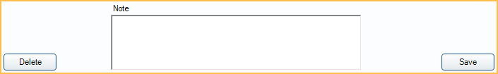

Adjustment
Adjustments are used to create additional charges or reduce charges on a patient account.
In the Account Module, in the toolbar, click Adjustment.
Alternatively:
- In the Account Module, double-click a Procedure, and click Add New Adj.
- In the Account Module, right-click a procedure, and click Add Adjustment.
- In a Claim, right-click a procedure, and click Add Adjustment. Allow procedure adjustments from Edit Claim window must be enabled in Preferences.
Adjustments affect production (see Production and Income). They are also used by the Billing/Finance Charges, Late Charges, Broken Appointments Automation, Discount Plans, and Sales Tax tools. Adjustments can be attached to a procedure but are always attached to a single patient and assigned to a provider and can be assigned to a clinic.
To view a list of adjustments added in a date range, run the Daily Adjustments Report.
Adjustment Details
Enter the adjustment amount, type, etc. at the top of the window.

Entry Date: Read only. The date the adjustment was created.
Adjustment Date: Typically the same as the entry date. This is the date that appears on the account and most reports. Modifying this date could potentially change historical data.
(procedure date): The date of the procedure associated with the adjustment. Read only when a procedure is attached to the adjustment.
Amount: The amount of the adjustment.
Provider: Defaults to the patient's primary provider. Click the dropdown or [...] to select a different provider or attach a procedure to inherit the procedure's provider.
- If using clinics, only providers with access to all clinics or restricted to the selected clinic are available.
Clinic: Defaults to the patient's assigned clinic. Click the dropdown to select a different clinic or attach a procedure to inherit the procedure's clinic.
- If the user is restricted to specific clinics in User Edit, only these clinics are available.
- Creating new adjustments through the Procedure Edit window automatically updates the clinic and provider on the adjustment to match that of the procedure.
- Linking existing adjustments to a procedure through the Procedure Edit window does not automatically update the clinic and provider assignment. Either choose an adjustment with a matching clinic and provider or edit the adjustment to match the procedure.
Additions: List of adjustment types that add the adjustment amount to the patient's account balance.
Subtractions: List of adjustment types that subtract the adjustment amount from the patient's account balance (issues a credit of production).
Only show TSI excluded adjustment types: Only available when TSI Collections is enabled and the selected patient has a Billing Type marked as C (Collections). Determine which Adjustment Types are listed:
- Checked: Default. Only the Exclude Negative Adj Type and Exclude Positive Adj Type Adjustment Types defined in TSI Setup are listed.
- Unchecked: All non-hidden Adjustment Types are listed.
- To customize the list of adjustment types, see Definitions: Adj Types.
- Additions and Subtractions only display types the user has access to. To edit available adjustment types for a user, edit the Adjustment Type Deny security permission. See Security section below.
Procedure
Attach or detach this adjustment from a procedure. To set whether users are required to allocate an adjustment to a procedure, see Adjustments in Allocations Setup.
The clinic and provider of the adjustment must match the attached procedure. If the provider and clinic do not match, the procedure value is not updated and the adjustment is considered a separate charge when a payment is applied.

Attach: Select a completed procedure from the Select Procedure window. Subtraction adjustments reduce the procedure fee and Addition adjustments increase the fee.
Detach: Remove the attached procedure from the adjustment.
Edit Anyway: Button is only visible if the adjustment is attached to a procedure and the Adjustment setting in Allocations Setup is set to Rigorous. Click to change the provider or clinic. Users must have the Setup security permission.
Note and Buttons
Add notes regarding the adjustment, save changes, or delete the adjustment at the bottom of the window.
Delete: Remove the adjustment from the patient's account. Adjustments attached to a payment or payment plan cannot be deleted.
Note: Enter any notes about the adjustment. These notes can be included on statements when the Show notes for adjustments preference is enabled. This text box supports Right-Click Options.
Click Save to exit the window and add a new adjustment or keep changes. If a warning appears, see Negative Adjustments section below for additional information.
Add Multiple Adjustments
To create multiple adjustments attached to multiple procedures at once, see Add Multiple Adjustments.
Negative Adjustments
The Negative Adjustments preference determines if users are able to create subtraction adjustments that exceed the estimated patient portion remaining. When the preference is set to Block, there is a warning that the adjustment cannot be created.

Click OK on this message to return to the Edit Adjustment window and edit the adjustment as to not exceed the estimated patient portion remaining.
If the Negative Adjustment preference is set to Warn and the adjustment exceeds the estimated patient portion remaining, there is an Overpaid Procedure Warning instead. Users can choose to Cancel the adjustment or click OK to proceed with creating the adjustment.
Security
The following Permissions affect access to adjustments:
- Adjustment Create: Users must have this permission to create new adjustments. Users without this permission can create $0 adjustments.
- Adjustment Edit: Users must have this permission to edit existing adjustments.
- Adjustment Edit Zero Amount: Allow users without Adjustment Edit to edit $0 adjustments with today's date.
- Adjustment Type Deny: Permission denies access to certain Adjustment Types. See below.
Adjustment Type Deny
In the User Groups tab of the Security window, select a user group to deny access to specific Adjustment Types (e.g., finance charge, professional discount, etc.) If there are existing denied Adjustment Types for the user group, the permission box is filled. If the user group has no denied Adjustment Types, the box appears blank.

- Click the box for the Adjustment Type Deny permission. The Definition Picker opens automatically. .
- Highlight the Adjustment Types to deny for the user group.
- Click OK to close the Definition Picker and save changes.

Users in the selected user group do not have access to the selected Adjustment Types. When creating a new adjustment (or editing an existing adjustment), denied Adjustment Types are hidden in the Adjustment Type lists.
If a user is assigned to multiple User Groups, they are only denied access to specific Adjustment Types when all assigned User Groups are denied access.